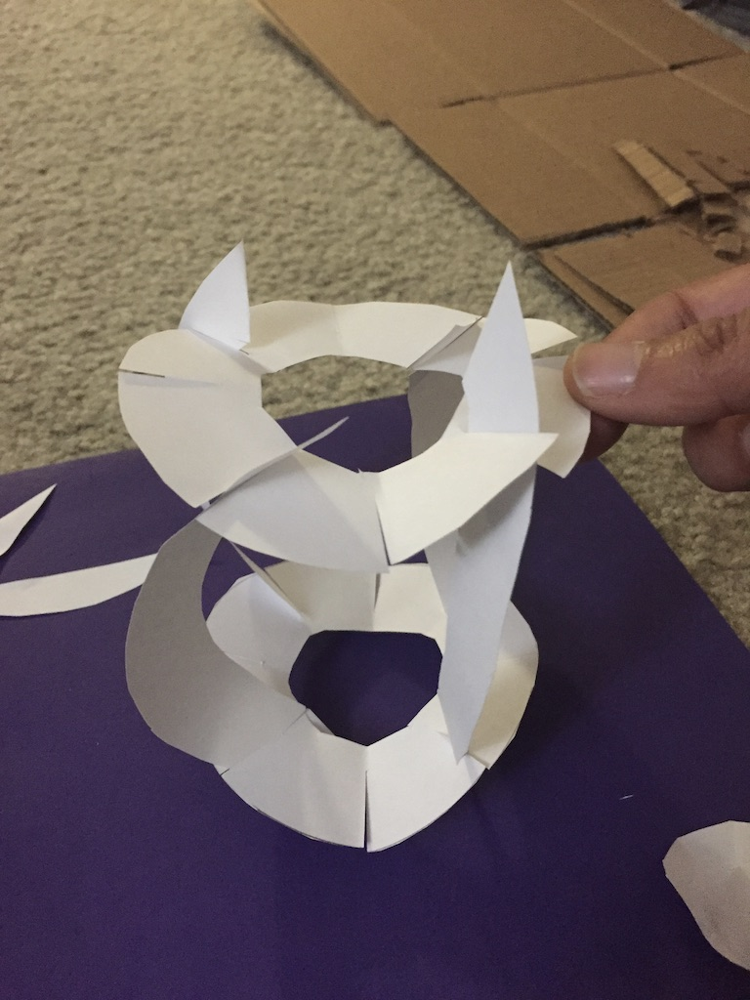
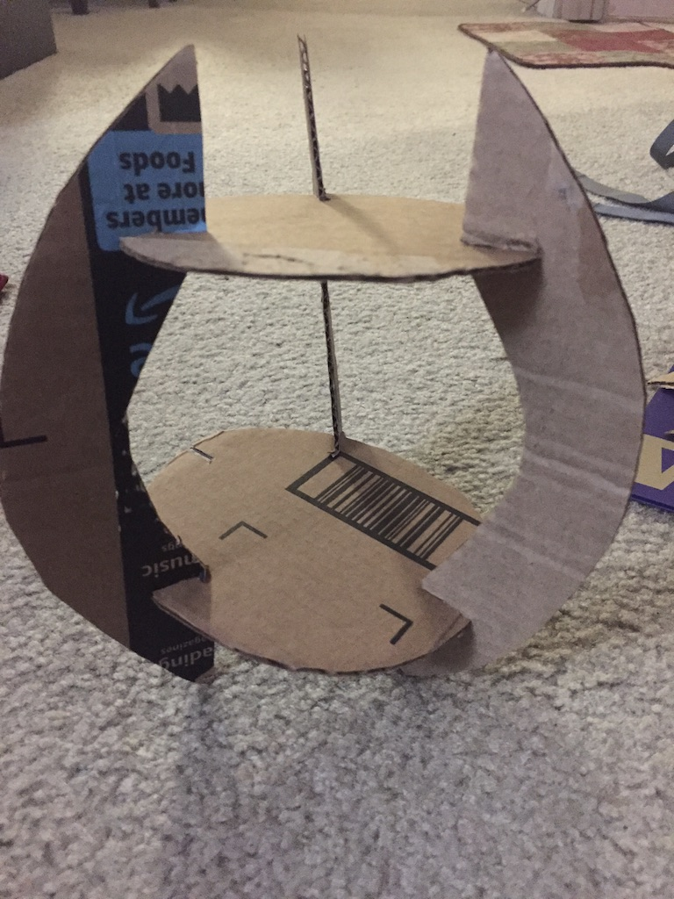
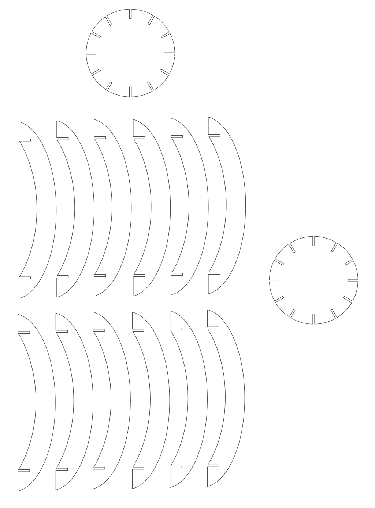
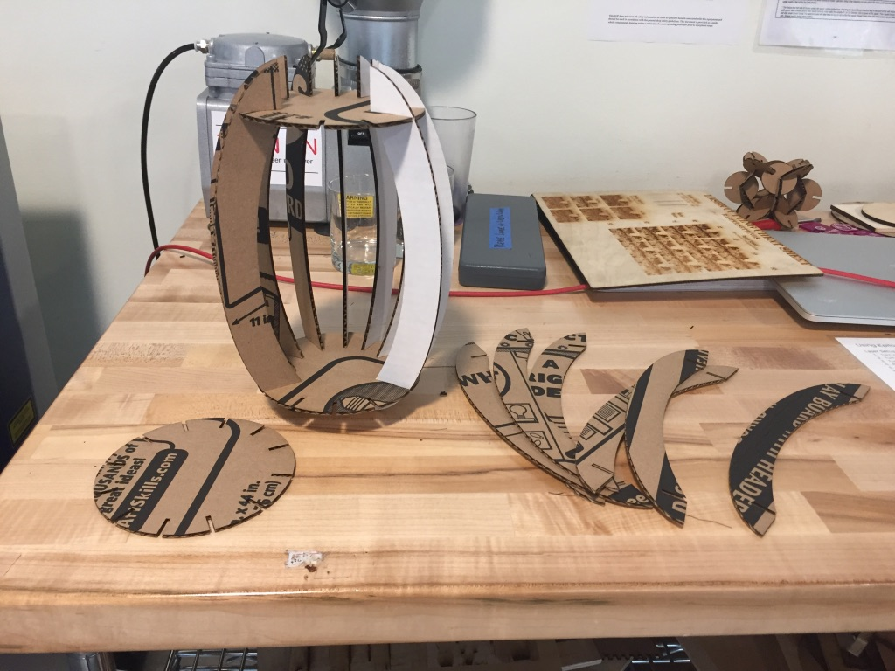

A1: Laser Cut Press Fit Construction Kit

I wanted to make something simple inspired by Japanese style, I decided to create a table lamp/pendant that creates geometric shadows when light passes through it. So I started by creating a paper/cardboard prototype of a lamp shade.  
Created the following on Illustator.  Assembling the parts after laser cutting the lamp at the MILL  Final Product: Vector Files: Link